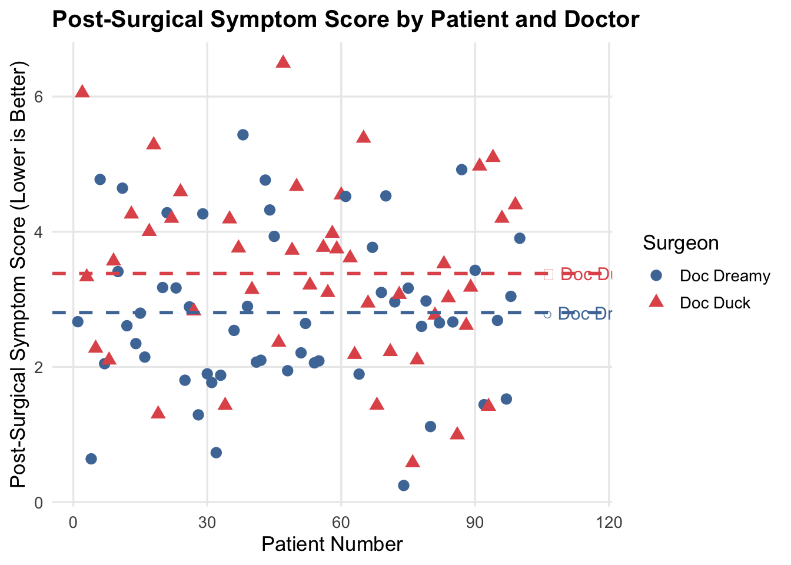
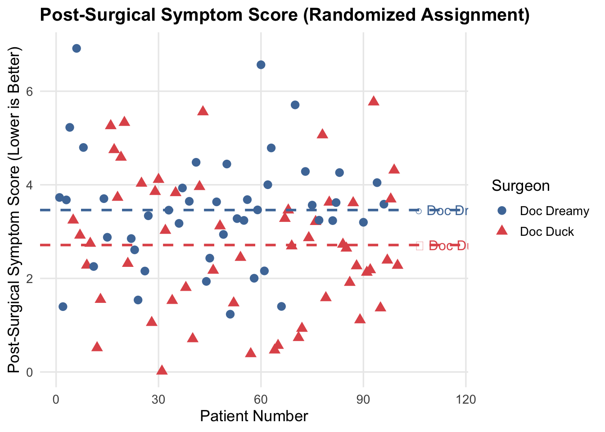

import pandas as pd# Load the observational datapatients_df = pd.read_csv('patients_data.csv')# Display first few rows to understand the structureprint(f"Number of patients: {len(patients_df)}")
# Load the observational datapatients_df <-read.csv('patients_data.csv')# Display first few rows to understand the structurecat("Number of patients:", nrow(patients_df), "\n")
Let’s use data to figure out which surgeon performs better. Figure 1 shows the post-surgical symptom score for 100 patients. Doc Duck’s average post-surgical symptom score is 3.38 while Doc Dreamy’s average is 2.8. Doc Dreamy performs better since lower scores indicate better outcomes. One might ask if the difference in average post-surgical symptom score is statistically significant. A two-sample t-test reveals a statistically significant difference (t = -2.317, p = 0.023).
Your task: Create a scatter plot showing post-surgical symptom scores by patient number, with different markers/colors for each doctor. The figure should include:
Scatter points for each patient (Doc Dreamy: circles, Doc Duck: triangles)
Horizontal dashed lines showing the mean for each doctor
Text annotations showing the mean values with shape symbols (○ for Doc Dreamy, △ for Doc Duck)
Colorblind-friendly colors (blue for Doc Dreamy, coral/red-orange for Doc Duck)
Professional styling: clear labels, grid, legend, appropriate font sizes
X-axis: Patient Number
Y-axis: Post-Surgical Symptom Score (Lower is Better)
Title: “Post-Surgical Symptom Score by Patient and Doctor”
Figure 1: Post-Surgical Symptom Score (lower is better) - Observed Data
Code
library(tidyverse)# Load observational datapatients_df <-read_csv("patients_data.csv")# Colorblind-friendly paletteCOLOR_DREAMY <-"#4E79A7"# blueCOLOR_DUCK <-"#E15759"# coral/red-orange# Marker shapes# Dreamy: circle (shape = 16)# Duck: triangle (shape = 17)shape_map <-c("Doc Dreamy"=16,"Doc Duck"=17)color_map <-c("Doc Dreamy"= COLOR_DREAMY,"Doc Duck"= COLOR_DUCK)# Compute means for dashed lines + annotationsmeans <- patients_df %>%group_by(doctor_name) %>%summarize(mean_score =mean(post_surgical_score))dreamy_mean <- means$mean_score[means$doctor_name =="Doc Dreamy"]duck_mean <- means$mean_score[means$doctor_name =="Doc Duck"]# Build the plotggplot(patients_df, aes(x = patient, y = post_surgical_score,color = doctor_name,shape = doctor_name)) +# Scatter pointsgeom_point(size =3, stroke =0.6) +# Mean horizontal dashed linesgeom_hline(yintercept = dreamy_mean,color = COLOR_DREAMY, linetype ="dashed", linewidth =1) +geom_hline(yintercept = duck_mean,color = COLOR_DUCK, linetype ="dashed", linewidth =1) +# Text annotations for means (○, △)annotate("text", x =max(patients_df$patient) +5,y = dreamy_mean,label =paste0("○ Doc Dreamy mean = ", round(dreamy_mean, 2)),color = COLOR_DREAMY, hjust =0, size =4) +annotate("text", x =max(patients_df$patient) +5,y = duck_mean,label =paste0("△ Doc Duck mean = ", round(duck_mean, 2)),color = COLOR_DUCK, hjust =0, size =4) +# Apply custom colors and shapesscale_color_manual(values = color_map, name ="Surgeon") +scale_shape_manual(values = shape_map, name ="Surgeon") +# Labels and titlelabs(title ="Post-Surgical Symptom Score by Patient and Doctor",x ="Patient Number",y ="Post-Surgical Symptom Score (Lower is Better)" ) +# Stylingtheme_minimal(base_size =13) +theme(legend.position ="right",plot.title =element_text(face ="bold", size =15),panel.grid.minor =element_blank() ) +# Expand x-axis to make room for annotationsexpand_limits(x =max(patients_df$patient) +15)

Figure 2: Post-Surgical Symptom Score (lower is better) - Observed Data
The Hidden Confounder: Patient Severity Explains It All
As readers of Figure 1, the easiest path for our brains is to accept the mental model of surgical outcomes depicted in Figure 3.
Figure 3: DAG Model Explaining Surgical Outcomes
The obvious conclusion from using the mental model of Figure 3 and the data shown in Figure 1 is that Doc Dreamy is the superior surgeon because his patients’ scores are lower than Doc Duck’s patients’ scores.
However, a “common cause” confounder can create an association between \(X\) and \(Y\) that is not causal in nature. For example, if \(X\) is puddles on the road and \(Y\) is people with umbrellas, it does not mean that the puddles cause people to have umbrellas. Instead, a common cause for both, namely rain (\(Z\)), is the sole reason for the observed association. The presence of rain causes both puddles and people to carry umbrellas, creating a spurious correlation between the two.
As Nassim Taleb hints, there may be an alternate explanation. Consider the model shown in Figure 4. Might there be an unaccounted for common cause that is causing the association between surgeon choice and surgical outcomes?
Figure 4: DAG Model Explaining Surgical Outcomes
A possible common-cause story would go something like this. Both surgeons have full schedules, with Dr. Dreamy scheduling surgeries 3 weeks in advance and Dr. Duck scheduling surgeries 1 week in advance. As such, patients who are not in a rush, usually those with low severity, are more likely to choose Dr. Dreamy based on his website and picture. However, patients who are in more of a rush, usually those with high severity, are more likely to choose Dr. Duck based on his availability and the fact that he is the only surgeon who can see them immediately.
WarningAssumption: Slow Progression of Patient Severity
For simplicity, we assume that patient severity progresses slowly enough that a 2-week delay (i.e., waiting for Dr. Dreamy’s availability) has zero effect on surgical outcomes. This delay affects only how quickly patients receive surgical relief, not the eventual outcome itself. While time-to-surgery can be an important factor in other contexts, here we focus solely on whether initial patient severity might create a spurious or biased association between surgeon choice and outcomes.
Solution 1: Randomization — Break the Confounding Path
The gold standard to establish causation is a randomized controlled trial. Instead of letting patients choose their surgeon, we randomly assign them to either Dr. Dreamy or Dr. Duck.
This is precisely the kind of problem randomization can solve. By randomly assigning patients to surgeons, we break the potential confounding relationship where patient severity ends up correlated with choice of surgeon. Since assignment is now random rather than based on patient choice between a good-looking doctor and a doctor available more quickly, we eliminate this confounding pathway. This break, pictured in Figure 5, allows us to assess whether surgeon identity truly matters for surgical success, or if the observed association was merely due to patient severity influencing both surgeon choice and outcomes.
Figure 5: DAG Model Explaining Surgical Outcomes
Figure 5 shows the DAG model for the randomization scenario. In this scenario, patient severity (\(Z\)) is no longer a cause of surgeon choice (\(X\)). Instead, randomization (\(R\)) completely determines surgeon assignment (\(X\)). This breaks the confounding relationship between patient severity and surgeon choice, allowing us to assess whether the surgeons themselves truly matter for surgical outcomes.
Our data doesn’t have counterfactuals, how can we know what would have happened to those patients if we had randomized?
NoteWhat is a counterfactual?
A counterfactual is the answer to a “what if” question: what would have happened if circumstances had been different? Specifically, what would each patient’s outcome have been if they had been assigned to the other surgeon, holding everything else constant? These are the unobserved alternative outcomes—the outcomes that didn’t happen but could have happened under different treatment assignment.
Unfortunately, we can’t observe what didn’t happen. The patients we already observed went to the surgeon they chose (or who was available), and we’ll never know their outcomes under the alternative assignment. This is the fundamental problem of causal inference: we only see one world, not the parallel universe where everything else was held constant but the treatment differed.
Since we cannot rerun history with randomization, we run an experiment to collect the data we need. So, we randomly assigned a sequence of 100 patients to either Dr. Dreamy or Dr. Duck and observed the following data:
import pandas as pd# Load the randomized datapatients_randomized_df = pd.read_csv('patients_data_randomized.csv')# Display first few rowsprint(f"Number of randomized patients: {len(patients_randomized_df)}")
# Load the randomized datapatients_randomized_df <-read.csv('patients_data_randomized.csv')# Display first few rowscat("Number of randomized patients:", nrow(patients_randomized_df), "\n")
?@fig-plot-outcomes-randomized shows the post-surgical symptom score for 100 patients under randomized assignment. Doc Duck’s average post-surgical symptom score is 2.71 while Doc Dreamy’s average is 3.46. Doc Duck performs better since lower scores indicate better outcomes. With randomization breaking the confounding relationship, we can now properly assess the causal effect. A two-sample t-test reveals a statistically significant difference (t = 2.734, p = 0.007). Not only is Dr. Dreamy not the better surgeon, he is actually the worse surgeon!
Your task: Create a scatter plot similar to Figure 1, but for the randomized data. The figure should show how randomization breaks the confounding relationship. Include:
Same styling as Figure 1 (markers, colors, mean lines, annotations)
Title should indicate this is randomized assignment
library(tidyverse)# Load randomized datasetpatients_rand <-read_csv("patients_data_randomized.csv")# Colorblind-friendly palette (same as Task 1)COLOR_DREAMY <-"#4E79A7"# blueCOLOR_DUCK <-"#E15759"# coral/red-orange# Shapes (same as Task 1)# Doc Dreamy → circle (shape 16)# Doc Duck → triangle (shape 17)shape_map <-c("Doc Dreamy"=16,"Doc Duck"=17)color_map <-c("Doc Dreamy"= COLOR_DREAMY,"Doc Duck"= COLOR_DUCK)# Compute means for dashed lines & annotationsmeans_rand <- patients_rand %>%group_by(doctor_name) %>%summarize(mean_score =mean(post_surgical_score))dreamy_mean <- means_rand$mean_score[means_rand$doctor_name =="Doc Dreamy"]duck_mean <- means_rand$mean_score[means_rand$doctor_name =="Doc Duck"]# Build the randomized assignment figureggplot(patients_rand,aes(x = patient,y = post_surgical_score,color = doctor_name,shape = doctor_name)) +# Scatter pointsgeom_point(size =3, stroke =0.6) +# Horizontal dashed mean linesgeom_hline(yintercept = dreamy_mean,color = COLOR_DREAMY, linetype ="dashed", linewidth =1) +geom_hline(yintercept = duck_mean,color = COLOR_DUCK, linetype ="dashed", linewidth =1) +# Annotate means with ○ and △annotate("text",x =max(patients_rand$patient) +5,y = dreamy_mean,label =paste0("○ Doc Dreamy mean = ", round(dreamy_mean, 2)),color = COLOR_DREAMY,hjust =0, size =4) +annotate("text",x =max(patients_rand$patient) +5,y = duck_mean,label =paste0("△ Doc Duck mean = ", round(duck_mean, 2)),color = COLOR_DUCK,hjust =0, size =4) +# Apply consistent colors & shapesscale_color_manual(values = color_map, name ="Surgeon") +scale_shape_manual(values = shape_map, name ="Surgeon") +# Labels and required titlelabs(title ="Post-Surgical Symptom Score (Randomized Assignment)",x ="Patient Number",y ="Post-Surgical Symptom Score (Lower is Better)" ) +# Professional stylingtheme_minimal(base_size =13) +theme(legend.position ="right",plot.title =element_text(face ="bold", size =15),panel.grid.minor =element_blank() ) +# Expand space on right for text annotationsexpand_limits(x =max(patients_rand$patient) +15)

Solution 2: Stratification — When You Can’t Randomize
The key to handling a common cause confounder is to stratify by the common cause. In general, this means we examine the relationship between treatment and outcome within groups that share the same value of the confounder. In our example, this means we look at patients of similar severity and compare the outcomes of the surgeons for patients of similar severity. There are mathematically sophisticated ways to do this, but here we demonstrate it visually. Since patient number lacks inherent meaning, the following figure shows patient severity on the x-axis and post-surgical symptom score on the y-axis.
Your task: Create a scatter plot showing post-surgical outcomes as a function of initial patient severity. This figure demonstrates the power of stratification. Include:
X-axis: Initial Patient Severity
Y-axis: Post-Surgical Symptom Score (Lower is Better)
Scatter points colored/marked by doctor (same scheme as previous figures)
Mean horizontal lines for each doctor
A rectangular overlay (shaded region) highlighting severity between -1 and 1
Text annotations for means positioned appropriately
Title: “Post-Surgical Symptom Score by Patient Severity”
This figure should reveal the confounding by showing how severity affects both surgeon assignment and outcomes
library(tidyverse)# Load observational dataset (same as Task 1)patients_df <-read_csv("patients_data.csv")# Colorblind-friendly palette (same as previous figures)COLOR_DREAMY <-"#4E79A7"# blueCOLOR_DUCK <-"#E15759"# coral / red-orange# Shapes (same as previous figures)shape_map <-c("Doc Dreamy"=16, # filled circle"Doc Duck"=17) # filled trianglecolor_map <-c("Doc Dreamy"= COLOR_DREAMY,"Doc Duck"= COLOR_DUCK)# Compute means for horizontal lines & annotationsmeans <- patients_df %>%group_by(doctor_name) %>%summarize(mean_score =mean(post_surgical_score))dreamy_mean <- means$mean_score[means$doctor_name =="Doc Dreamy"]duck_mean <- means$mean_score[means$doctor_name =="Doc Duck"]# X range to help position annotationsx_min <-min(patients_df$severity)x_max <-max(patients_df$severity)ggplot( patients_df,aes(x = severity,y = post_surgical_score,color = doctor_name,shape = doctor_name)) +# Shaded region between -1 and 1 (stratification band)annotate("rect",xmin =-1, xmax =1,ymin =-Inf, ymax =Inf,fill ="grey70", alpha =0.15) +# Scatter pointsgeom_point(size =3, stroke =0.6) +# Horizontal mean linesgeom_hline(yintercept = dreamy_mean,color = COLOR_DREAMY,linetype ="dashed",linewidth =1 ) +geom_hline(yintercept = duck_mean,color = COLOR_DUCK,linetype ="dashed",linewidth =1 ) +# Text annotations for means (○ and △)annotate("text",x = x_max +0.3,y = dreamy_mean,label =paste0("○ Doc Dreamy mean = ", round(dreamy_mean, 2)),color = COLOR_DREAMY,hjust =0,size =4 ) +annotate("text",x = x_max +0.3,y = duck_mean,label =paste0("△ Doc Duck mean = ", round(duck_mean, 2)),color = COLOR_DUCK,hjust =0,size =4 ) +# Manual colors and shapes to match earlier figuresscale_color_manual(values = color_map, name ="Surgeon") +scale_shape_manual(values = shape_map, name ="Surgeon") +# Labels and required titlelabs(title ="Post-Surgical Symptom Score by Patient Severity",x ="Initial Patient Severity",y ="Post-Surgical Symptom Score (Lower is Better)" ) +# Professional stylingtheme_minimal(base_size =13) +theme(legend.position ="right",plot.title =element_text(face ="bold", size =15),panel.grid.minor =element_blank() ) +# Extend x-axis to make room for annotationsexpand_limits(x = x_max +1)
Looking at ?@fig-plot-outcomes-severity, the value of stratifying by severity is visually most obvious with initial patient severity scores between -1 and 1 (highlighted in the overlay). We chose this region because it shows substantial overlap between the two surgeons—both surgeons have considerable data within this range, making it an ideal region for comparing their performance. Outside of this range, there is less data available for making direct comparisons: Doc Duck sees more of the higher-severity patients (severity > 1), while Doc Dreamy sees more of the lower-severity patients (severity < -1).
Within the highlighted region, Doc Dreamy’s blue circles tend to be higher (worse) than Doc Duck’s red triangles for these patients. It is also obvious that Doc Duck is seeing the more severe patients overall, as his red triangles are generally to the right of Doc Dreamy’s blue circles on the x-axis. This is exactly what we would expect if patient severity were a common cause of surgeon choice and surgical outcomes. Despite the aggregate statistics pointing to Doc Dreamy having lower (better) post-surgical symptom scores on average, our visual analysis of this overlapping region leads us to conclude that Doc Duck is actually the better surgeon—a conclusion that would be obscured if we only looked at the means without stratifying by severity.
How to Solve the Confounder Challenge
Here’s the problem with graphs and statistics in general: the numbers can easily mislead you. Or rather, you can be misled by the numbers when you don’t understand what they’re really telling you.
When you just look at the raw data and ask who had better outcomes, Doc Dreamy wins. Lower scores look great on paper. But here’s where it gets important: that association doesn’t mean what you think it means. Correlation is not causation, and we all know that, but we forget it every single time because our brains are wired to see patterns and assign causes.
The real villain here is patient severity. It operates like a puppeteer behind the curtain, making Doc Dreamy look good by sending him easier cases while sending Doc Duck the harder ones. When you don’t randomize, you can’t tell the difference between “Doc Dreamy is a better surgeon” and “Doc Dreamy got lucky with his patient assignment.” On any graph or in any headline, look for the common-cause-confounder villian that is unaccounted for.
Randomization is an excellent defense against this kind of confounding. Flip a coin, assign patients randomly, and suddenly the puppeteer loses control. Now you can actually see who the better surgeon is. And the surprise is that it’s the one who doesn’t look the part. The data wasn’t lying; it was just answering a different question than you thought you were asking.
If you can’t randomize, and that’s most of the time, you stratify. Look within groups of similar patient severity. Compare apples to apples, not apples to oranges. It’s more work, and it’s less satisfying than a clean randomized trial, but it’s better than being fooled by confounding.
The take-home lesson: The world is messy, and the numbers will mislead you if you let them. But if you understand the structure of the problem, if you draw the DAG and think about what causes what, you can defend yourself against being fooled. Randomization when you can, stratification when you can’t. The tools are simple. The hard part is remembering to use them.